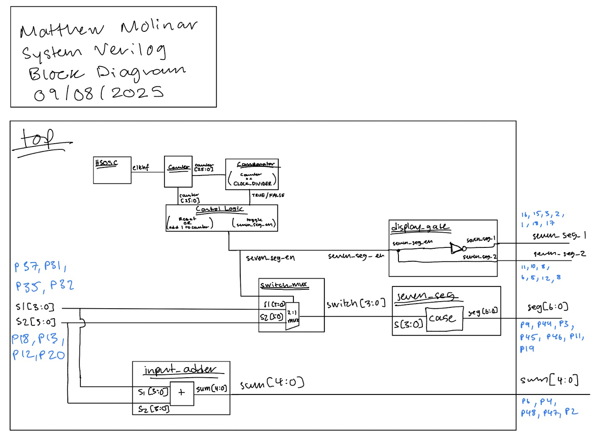

Lab 2: Multiplexed 7-Segment Display
Introduction
In this lab, we learned how to use time multiplexing to make efficient used of the I/O pins on our FPGA. We used time multiplexing to drive two seven-segment displays with a single set of FPGA I/O pins. We also built transistor circuits to drive large currents from FPGA pins.
Design and Testing Methodology
Design Methodology
This design consists of four lower level modules, which use time multiplexing to control two seven-segment displays with two four-bit switch inputs. Additionally, the switch inputs are added together and their sum is displayed on five LEDs (off-board) to represent a five-bit binary number.
The clock division was achieved by using the on-board high-speed oscillator (HSOSC), which generated a 24 MHz clock signal. Then, a counter was used to divide this frequency down to ~60 Hz. After each clock cycle, the seven-segment displays were toggled. Thus, I divided down to a 60 Hz display rate, since it would be fast enough to appear continuous/smooth to the human eye.
The switch mux was responsible for selecting the right set of switch inputs based on the enable signal (seven_seg_en), to drive the correct seven segment display. The display_gate module also used the enable signal, but tpo determine which display to turn on.
Finally, the seven_seg module took in a four-bit switch input and determined the correct seven-segment encoding to diplay the appropraiet hex digit. The input_sum module diplayed the sum of both four-bit switch inputs as a five-bit binary number on five LEDs.
Testing Methodology
Testing this design was done via simulation and hardware verification.
First all lower level modules were tested on their own to make sure all possible inputs worked. Then, for simulation of the top module, different clock divider logic was used because the Questa simulator can’t interpret HSOSC. Thus, this simulation ensured the correct toggling of the seven-segment enable signal, correct multiplexing of switch inputs, accurate seven-segment encodings, and correct sum results from switch input addition. The top module only tested a few cases, since every case was exhausted in the lower level module testbenches.
Technical Documentation:
The source code for the project can be found in the associated GitHub repository.
Block Diagram
(Figure 1: Block Diagram of the Verilog Design)
The block diagram in Figure 1 demonstrates the overall architecture of the design. The top-level module, top, includes four submodules: the switch mux module (switch_mux), the display gate module (display_gate), the seven segment display module (seven_seg), and the input sum module (input_sum). It also contains logic for the the clock divider which toggles the seven_segment displays at our desired frequency (~60 Hz).
Schematic
 (Figure 2: Schematic of physical layout)
(Figure 2: Schematic of physical layout)
Figure 2 shows the physical layout of the design. The anodes of seven-segment display were connected using 330 Ω current-limmiting resistors and a 2N3906 PNP transitor to ensure the output current was less than 8 mA. The LEDs of the seven-segment display were connected using 1k Ω resitors, and the off-board LEDs displaying the sum of the switch inputs were connected using 560 Ω resistors.
Resistor Calculations
According, to the ice40 datasheet, on section 4.17 it says the I/O pins are rated for 8 mA. Thus, I chose 330 Ω resistos for the transistor circuit based on the following calculations:
\[ V = 3.3 - V_f = 3.3 - 0.7 = 2.6 \, \text{V} \]
\[ V = IR \quad \Rightarrow \quad R = \frac{V}{I} = \frac{2.6}{0.008} = 325 \, \Omega \]
For the seven-segment display LEDs, I used 1 kΩ resistors based on the following equation:
\[ V = 3.3 - V_f = 3.3 - 2 = 1.3 \, \text{V} \]
I didn’t want the LEDs on the display to run too hot or be too bright, so I just used 1 kΩ resistors resulting in a current of 1.3 mA. Finally, I used 560 Ω resisots for the off-board LEDs based on the following equations:
\[ V = 3.3 - V_f = 3.3 - 1.7 = 1.6 \, \text{V} \]
\[ V = IR \quad \Rightarrow \quad R = \frac{V}{I} = \frac{1.6}{0.02} = 80 \, \Omega \]
Results and Discussion
Test Bench Simulation
(Figure 3: A screenshot of a QuestaSim simulation demonstrating both seven-segment displays toggle appropriately.)
(Figure 4: A zoomed in screenshot of a QuestaSim simulation demonstrating the both four-bit inputs sum accurately.)
(Figure 5: A zoomed out screenshot of a QuestaSim simulation demonstrating the both four-bit inputs sum accurately.)
(Figure 6: A zoomed in screenshot of a QuestaSim simulation demonstrating accurate switching between both four-bit inputs.)
(Figure 7: A zoomed out screenshot of a QuestaSim simulation demonstrating accurate switching between both four-bit inputs.)
(Figure 8: A screenshot of a QuestaSim simulation demonstrating that all sub-module work together accurately to implement time multiplexing for a dual seven-segment display.)
The design met all intended design objectives. Figure 3 shows that the display_gate module works and that both seven segment displays turn on appropriately. Figures 4 and 5 show that the input_sum module works as intended, and that the correct sum is calculated by adding both four-bit switch inputs. Figures 6 and 7 show that the switch_mux module works and that it can switch between different four-bit inputs accurately. Finally, Figure 8 shows that the top module works as intended and that it accurately merges all sub-modules.
Hardware
Hardware was also tested to ensure that there was no noticible flickering, both sets of switch inputs could drive separate seven-segment displays without bleeding, and to ensure that LEDs lit up appropriately to display the sum of the inputs as a five-bit binary number.
Conclusion
The design succesfully implemented time multiplexing to drive two seven-segment displays with a single set of FPGA I/O pins. There was no flickering or bleeding from the dual seven-segment display. I spent a total of 15 hours on this lab.
AI Prototype Summary
For the following AI Prototype, I will be using ChatGPT.
Prompt
Write SystemVerilog HDL to time multiplex a single seven segment decoder (that decodes from four bits to a common anode seven segment display) to decode two sets of input bits and drive two sets of seven output bits. Use the seven segment decoder and oscillator provided in the attached files.
Generated Code
module two_digit_display (
input logic clk, // main clock input
input logic [3:0] in0, // first 4-bit input
input logic [3:0] in1, // second 4-bit input
output logic [6:0] seg, // seven segment outputs (shared)
output logic [1:0] an // common anode control (active low if common anode)
);
// Internal signals
logic mux_sel; // toggles between digits
logic [3:0] nibble; // selected input bits
logic slow_clk; // divided clock from oscillator
// Instantiate oscillator / clock divider (from led_control.sv)
oscillator u_divider (
.clk_in (clk),
.clk_out(slow_clk)
);
// Toggle mux_sel on slow clock
always_ff @(posedge slow_clk) begin
mux_sel <= ~mux_sel;
end
// Select between input sets
always_comb begin
if (mux_sel == 1'b0) begin
nibble = in0;
an = 2'b10; // enable digit0, disable digit1
end else begin
nibble = in1;
an = 2'b01; // enable digit1, disable digit0
end
end
// Instantiate seven segment decoder (from seven_seg.sv)
seven_seg u_decoder (
.bin (nibble),
.seg (seg)
);
endmoduleReflection
I provided my seven_seg and led_control modules from lab 1 and it synthesized first try. I think the quality of the output is really high because it produced very clean and readable code. I was mostly able to follow the code that was generated, however, it used weird variable names such as nibble, which I didn’t understand. The way that it grabbed the oscillator from my led_control module was also weird. I think the code synthesized first try largely due to the prompt and supporting files that it was fed. Thus, when using LLMs in my workflow I will make sure to be as descriptive with prompts as possible, so that it can generate code with behavior that I expect. Next time however, I will make sure to ask about anything in the code that doesn’t make sense to me.